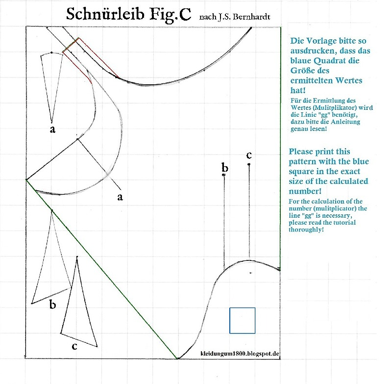
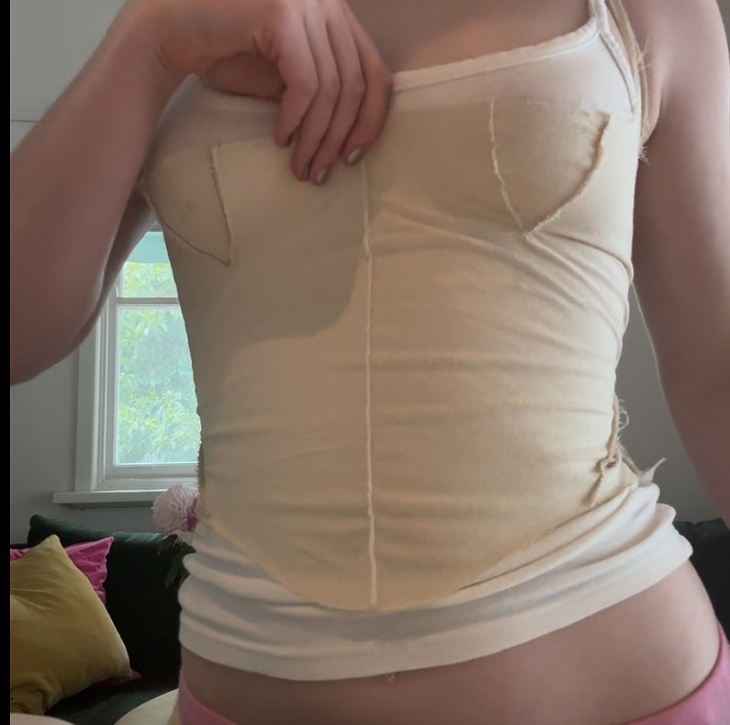
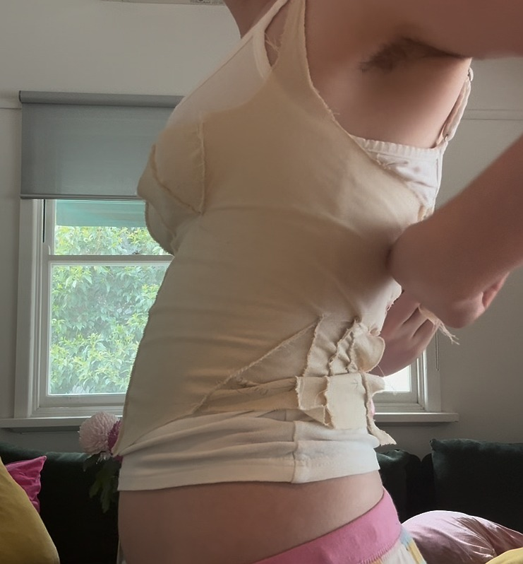
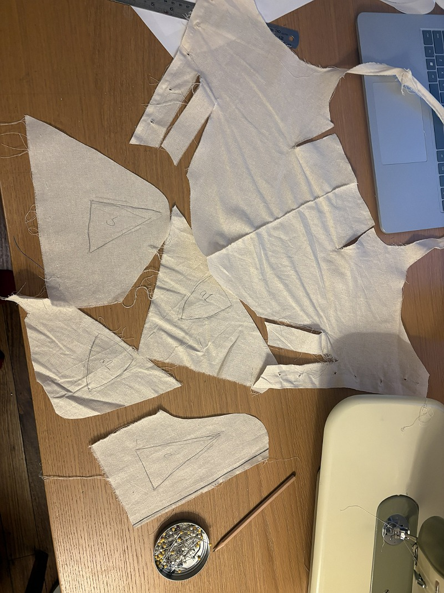
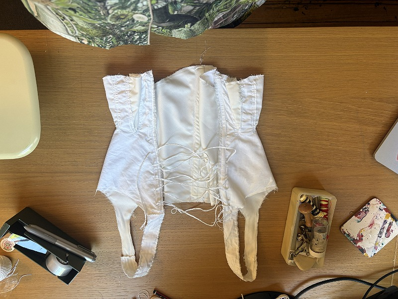

Based on my research into 1810s gowns and undergarments, decided to work on producing a pair of 1810s stays to wear as shaping garments under my dress. I worked from Sabine Schierhoff's digitisation of J.S. Bernhardt's stays pattern.
I used the pattern labelled 'F' on Schierhoff's blog post, and ended up making three mockups in order to perfect the fit and, in particular, the shape of the gores at the hip and bust. These a pieces inserted into the garment, kind of the opposite of a dart, that are used to shape the fabric so it fits around a curve. In J.S. Bernhardt's original pattern, the gores provided a more of a suggestion than a rule, and I needed to self draft them on the first of my mockups.
My aim, in refining the fit of these stays was to lift and separate the bust, which I think I achieved pretty well. The final pair is made from two layers of tightly woven white cotton. I ran out of time to properly finish and make beautiful all of the bindings, eyelet holes and hem, but for an undergarment for a single photoshoot, it will do the trick. I created a busk channel at the centre front, and added boning along each side of the centre back. These two strips of boning at the back were used as stability for the eyelet holes, rather than as any kind of shaping element, as the cut of the fabric itself is what achieves this silhouette. The stays are not tight laced, and there was no need to for them to reduce the natural waist, and they are very comfortable!





